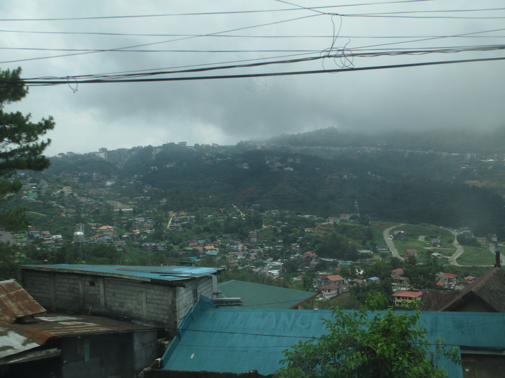

About Me
Josh Hamilton

I grew up in Modesto, CA. The town is pretty big, so when we moved around throughout my childhood I got to see all the different facets of the town; from the wild west southern portions to the more sophisticated northern bits. My family is 100% redheaded! Both my parents are the only ones in their immediate families endowed with such a splendid hair pigment. They therefore passed that down to all of their children. Speaking of, there are 5 of us. I am the second oldest, and the only boy. That means that I grew up watching a lot of Barbie movies with my sisters and being pestered endlessly by their antics. I also was the favored one, as I didn't annoy my parents with any unsolicited moods.
My Mission 
I served in the Philippines, Baguio mission from October 2018
until March 2020. I think you can guess why I was sent home
early, 6 months before my expected return date. My mission was
a huge learning experience for me! Not only did I learn just
how important patience is, I also got to learn more about the
gospel, teach a bunch of cool people, and learn the nation's
language, Tagalog (mabuhay!).
While the Philippines is a pretty hot place, there was one
place in my mission that was relatively cool, and that was the
actual name of the mission, Baguio city. Baguio city is cool
because the entire thing resides within the mountains. The trip
up there (usually by Partas buses) can be quite nauseating, but
once you're there, you get to enjoy the colder, wetter
environment and amazing views.
Hobbies
I have always been a musical fellow. My mom put my sister and
me into piano lessons when we were super young, which
taught me how to play "Row, Row, Row Your Boat" and nothing
else. That isn't to say that I gave up piano forever. Later
in life I took it up again, resolute in my decision to teach
myself how to play. I didn't actually make much progress with
that until my mission, where I decided to play piano for my
first ward. I was terrible at the time, but through sheer
determination I was able to become a lot better throughout my
mission. I have been practicing ever since and am now the
full-time pianist for my current ward!
I have also been playing an instrument since the 4th grade.
I started out on trumpet, which was an adventure. It taught me
the treble clef, which is what the right hand of piano songs
uses. It also paved the way for me to pick up the French Horn
in the 8th grade. The whole first month of playing, I had no
fingering charts, no idea what key the instrument was in, and
therefore sounded awful and did not play the right notes. That's
not even mentioning how relatively difficult the instrument is!
In the end, I was able to learn it and get pretty good, playing
it all through high school. I am finally picking it up again to
play in the University Band this semester.
Other hobbies include playing video games, programming for fun,
and consuming top-notch media.